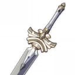
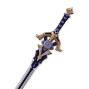

Альбедо

Альбедо умеет быстро атаковать и поражать нескольких врагов одновременно. Поскольку многие навыки героя зависят от массового контроля, лучшие артефакты и оружие должны работать на увеличение урона и атаки.
Билд "Поддержка Гео"
Оружие
Предвестник зари
Когда здоровье выше 90%, шанс критического удара увеличивается на 14/18/22/24/28%.
или
Киноварное веретено
Урон умения стихии увеличивается на 40/50/60/70/80% от защиты. Эффект будет срабатывать не чаще, чем раз в 1,5 секунды, и будет сброшен через 0,1 секунды после того, как умение стихии нанесет урон.
Артефакты
Архаичный камень
(2) +15 к урону Гео.
или
Церемония древней знати

(2) +20% к урону от взрыва стихии.
и
Церемония древней знати
(2) +30% к защите.
(4) Владелец оружия получает эффект Любопытства. 1 уровень Любопытства даётся активному персонажу после попадания по противнику атакой Гео (не чаще чем раз в 0,3 секунды). Когда персонаж находится вне поля боя, он получает 1 уровень Любопытства каждые 3 секунды. Любопытство может складываться до 4 уровней, каждый уровень прибавляет 6% к защите и 6% к урону Гео. Если персонаж не получает Любопытства в течение 6 секунд, то теряет 1 накопленный уровень Любопытства.
Рекомендуемые характеристики артефактов
Основные

Защита%

Урон Гео

Шанс критического попадания / Урон / Защита%
Второстепенные
- 1.Шанс критического попадания / Урон
- 2.Защита%
- 3.Восстановление энергии
- 4.Защита